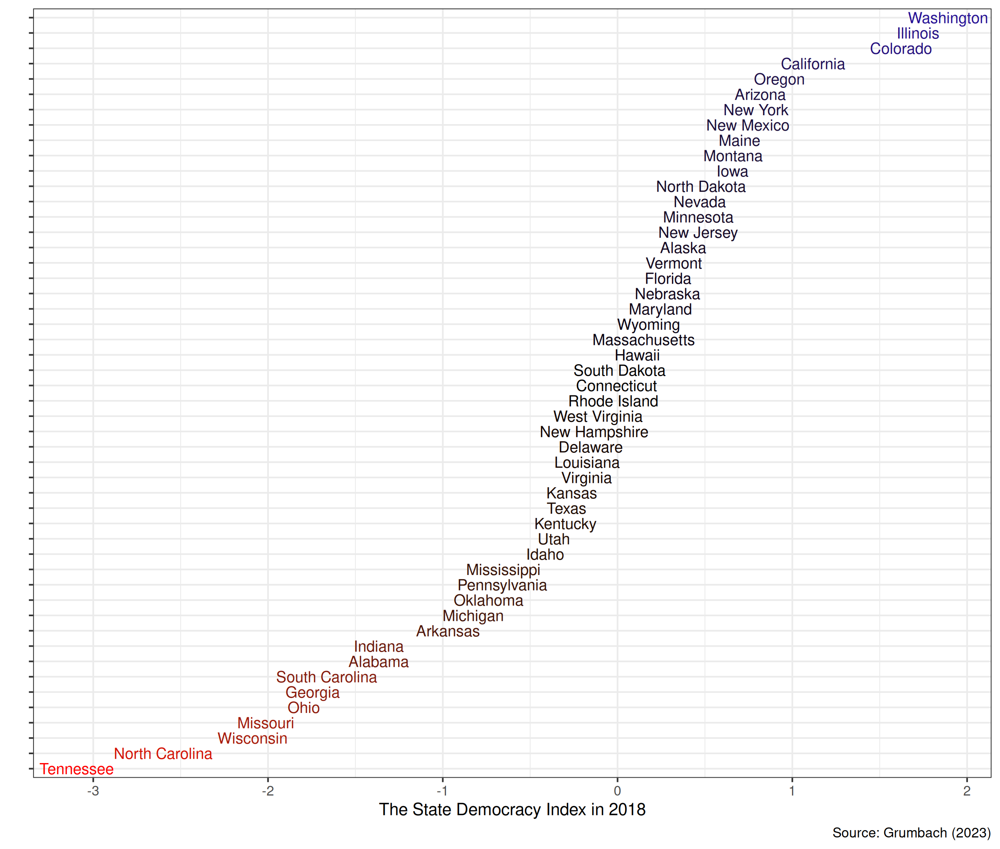
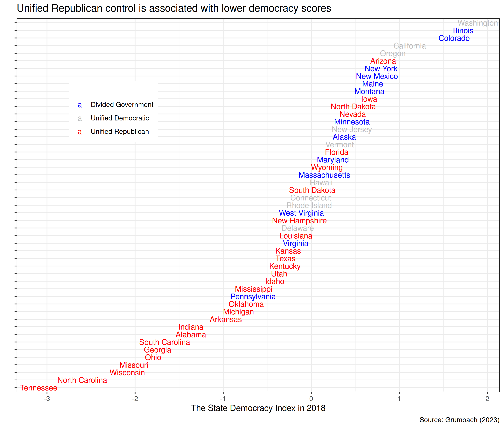
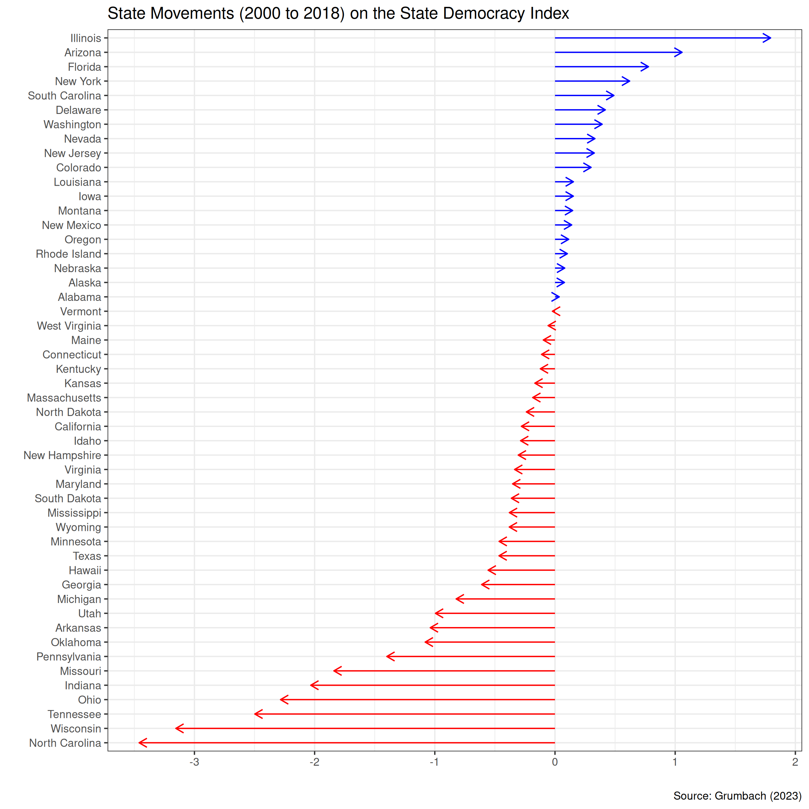
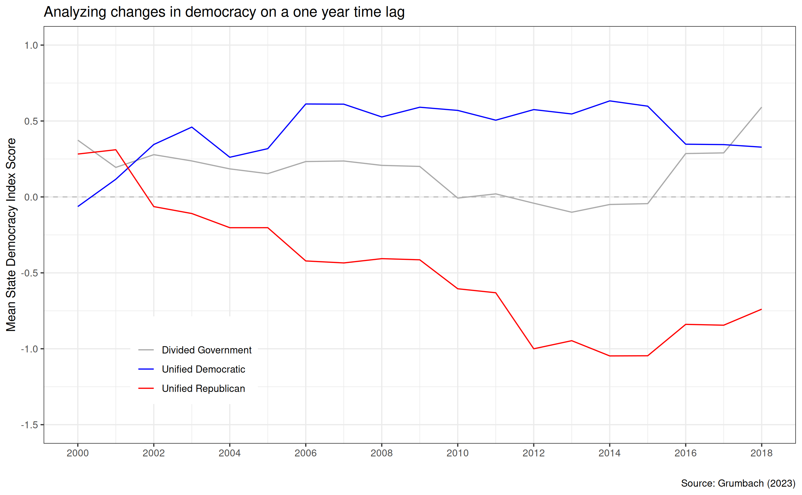

Today’s Agenda
I. Road testing measures of democracy
Sub-national measures of American democracy
Justin Leinaweaver (Fall 2024)
Grumbach2022_state_democracy_index.xlsx
Analyze the variation in state scores on the State Democracy Index (
democracy_mcmc
) in 2018
The State Democracy Index: Variation
The State Democracy Index: Cases

The State Democracy Index: Cases

The State Democracy Index: Changes

Grumbach2022_state_democracy_index.xlsx
Make a line plot of Missouri’s scores on the State Democracy Index (
democracy_mcmc
)
The State Democracy Index: Missouri
The State Democracy Index: Missouri

The State Democracy Index: Inputs
Grumbach2022-Input_Data.xlsx
Grumbach2022-Variables_list.xlsx